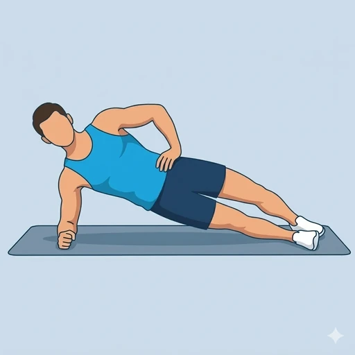

Side Plank with Leg Lift
A side plank with the top leg raising up, combining lateral core work with hip abduction.
Core · Bodyweight · Intermediate


Muscles worked by the Side Plank with Leg Lift
Primary
Secondary
Also called: glute med, gluteus medius, side glute, hip abductor glute, oblique, obliques.
Equipment
No equipment — this is a bodyweight exercise.
How to do the Side Plank with Leg Lift
- Lie on your side with the forearm on the floor, elbow under the shoulder.
- Stack the feet and lift the hips into a side plank.
- From this stable side plank, raise the top leg straight up toward the ceiling.
- Lower the leg back down with control without dropping the hips.
- Complete reps on one side, then switch.
Form tips
- Keep the hips lifted the entire set — do not let them sag.
- Lead the leg lift with the heel, not the toes.
- Keep the body in one straight line from head to bottom foot.
At a glance
| Body part | Core |
|---|---|
| Category | Strength |
| Force type | Push |
| Mechanic | Compound |
| Difficulty | Intermediate |
| Equipment | Bodyweight |
| Goals | Endurance, Strength, Hypertrophy |
| Tags | Core, Calisthenics, Glute focus, Knee safe, Lower back safe, Shoulder safe, No axial load |
| MET | 5.0 (metabolic equivalent, for calorie estimates) |
| Unilateral | Yes |
| Bodyweight | Yes |
| Dataset id | side-plank-leg-lift |
Side Plank with Leg Lift in German & Spanish
| German | Side Plank mit Beinheben |
|---|---|
| Spanish | Plancha Lateral con Elevación de Pierna |
Descriptions, instructions and tips ship in all three languages in the JSON.
Related exercises
Exercise data (JSON)
The record below is exactly what exercises.json ships for this exercise — names, descriptions, instructions and tips in English, German and Spanish.
{
"id": "side-plank-leg-lift",
"name_en": "Side Plank with Leg Lift",
"name_de": "Side Plank mit Beinheben",
"name_es": "Plancha Lateral con Elevación de Pierna",
"description_en": "A side plank with the top leg raising up, combining lateral core work with hip abduction.",
"description_de": "Eine Side-Plank-Variante mit Anheben des oberen Beins, die seitliche Rumpfarbeit mit Hüftabduktion kombiniert.",
"description_es": "Una plancha lateral con elevación de la pierna superior, que combina trabajo de core lateral con abducción de cadera.",
"category": "strength",
"force_type": "push",
"mechanic": "compound",
"difficulty": "intermediate",
"body_part": "core",
"primary_muscles": [
"gluteus_medius",
"obliques"
],
"secondary_muscles": [
"gluteus_maximus",
"rectus_abdominis",
"transverse_abdominis"
],
"goals": [
"endurance",
"strength",
"hypertrophy"
],
"tags": [
"core",
"calisthenics",
"glute_focus",
"knee_safe",
"lower_back_safe",
"shoulder_safe",
"no_axial_load"
],
"variation_group": "plank",
"is_unilateral": true,
"is_bodyweight": true,
"instructions_en": [
"Lie on your side with the forearm on the floor, elbow under the shoulder.",
"Stack the feet and lift the hips into a side plank.",
"From this stable side plank, raise the top leg straight up toward the ceiling.",
"Lower the leg back down with control without dropping the hips.",
"Complete reps on one side, then switch."
],
"instructions_de": [
"Lege dich seitlich hin, Unterarm auf dem Boden, Ellbogen unter der Schulter.",
"Lege die Füße übereinander und hebe die Hüfte in die Side-Plank-Position.",
"Hebe aus dieser stabilen Position das obere Bein gestreckt Richtung Decke.",
"Senke das Bein kontrolliert wieder ab, ohne die Hüfte sinken zu lassen.",
"Führe die Wiederholungen auf einer Seite durch, dann wechsle die Seite."
],
"instructions_es": [
"Túmbate de lado con el antebrazo en el suelo y el codo bajo el hombro.",
"Coloca un pie sobre el otro y eleva las caderas hasta una plancha lateral.",
"Desde esta plancha lateral estable, sube la pierna de arriba recta hacia el techo.",
"Baja la pierna de forma controlada sin dejar caer las caderas.",
"Completa las repeticiones de un lado y luego cambia."
],
"tips_en": [
"Keep the hips lifted the entire set — do not let them sag.",
"Lead the leg lift with the heel, not the toes.",
"Keep the body in one straight line from head to bottom foot."
],
"tips_de": [
"Halte die Hüfte den ganzen Satz über oben — kein Durchhängen.",
"Führe das Beinheben mit der Ferse an, nicht mit den Zehen.",
"Halte den Körper in einer Linie vom Kopf bis zum unteren Fuß."
],
"tips_es": [
"Mantén las caderas elevadas toda la serie; no dejes que se hundan.",
"Guía la elevación de la pierna con el talón, no con la punta.",
"Mantén el cuerpo en una sola línea recta de la cabeza al pie de abajo."
],
"met": 5.0,
"images": {
"flat": {
"start": "images/flat/side-plank-leg-lift-start.webp",
"peak": "images/flat/side-plank-leg-lift-peak.webp"
}
}
}Fetch just this exercise
const { exercises } = await fetch(
"https://exercise-dataset.com/exercises.json"
).then(r => r.json());
const ex = exercises.find(e => e.id === "side-plank-leg-lift");Free for personal and commercial in-app use with attribution (“Exercise data by RepDB”) — see the license and ready-made attribution snippets. Redistributing the data as a dataset or API is not permitted.